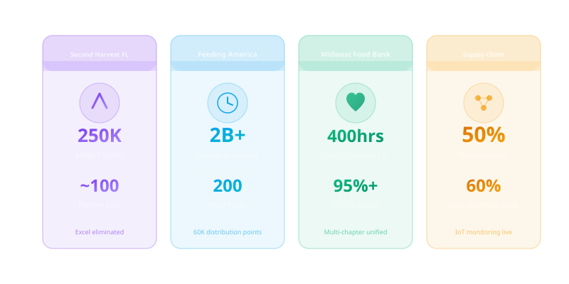

These are real success stories from food banks and hunger relief organizations that transformed their operations with Salesforce and strategic technology adoption. Each case study represents a documented implementation with measurable outcomes — from crisis-scale meal distribution to national food rescue coordination.

Second Harvest Food Bank of Central Florida
Second Harvest Food Bank of Central Florida is one of the largest hunger relief organizations in the state, coordinating food distribution across approximately 100 partner agencies including food pantries, soup kitchens, shelters, and community organizations. For years, the organization managed its donation inventory, compliance tracking, and order fulfillment through a combination of Excel spreadsheets and manual processes — a system that worked at modest scale but became increasingly unsustainable as demand grew.
The Challenge: Each partner site operated on its own tracking system, making it impossible for Second Harvest to maintain real-time visibility into what food was where. Donation inventory was recorded manually, compliance documentation lived in filing cabinets and disconnected spreadsheets, and order fulfillment from partners required phone calls and emails that introduced delays and errors. When crisis events triggered sudden demand spikes, the organization had no mechanism to scale coordination rapidly.
The Solution: Second Harvest replaced its manual systems with GoldFinch ERP, an enterprise resource planning platform built on Salesforce. The implementation centralized donation inventory management, automated compliance workflows, and streamlined order fulfillment across the entire partner network. Partner agencies gained portal access to submit orders, report distribution data, and communicate needs through a structured digital channel rather than ad-hoc phone and email.
The Results: The impact was most visible during crisis response. Second Harvest scaled to distributing 250,000 meals in a single month — a volume that would have overwhelmed their previous manual systems. Real-time coordination across approximately 100 partner sites replaced the phone-and-email approach that had created bottlenecks during previous emergencies. Manual tracking inefficiencies were eliminated, and compliance reporting that previously consumed days of staff time became automated. The platform gave leadership visibility into food movement across the entire network for the first time.
Feeding America
Feeding America is the nation's largest domestic hunger relief organization, operating as a federated network of 200 independent food banks and 60,000 distribution points that collectively serve 38 million hungry Americans, including 12 million children. The scale of the network creates a unique challenge: 80 percent of member food banks lack dedicated IT staff, and technology solutions vary significantly across the network. Coordinating food movement, data sharing, and resource allocation across 200 independent entities requires infrastructure that no single food bank could build alone.
The Challenge: Each of the 200 food banks in the network operates independently — with its own board, its own staff, and its own technology decisions. As Feeding America's first CIO Maryann Byrdak described it: "We really act as a parent organization, but each of the food banks are an independent entity. They can decide what and how they utilize our services." This federated structure meant that national-level visibility into food movement, surplus, and need was fragmented across hundreds of disconnected systems.
The Solution: Feeding America built a multi-platform technology stack anchored by Salesforce CRM for national office operations, Google Cloud with Informatica Intelligent Cloud Services for data infrastructure, and Tableau for analytics and dashboards. The centerpiece of their technology transformation is MealConnect — the first nationally available food rescue and sourcing platform — which uses algorithms to optimize transportation routes and match produce donors with nearby food banks. The platform enables peer-to-peer offer sharing through a mobile-friendly interface, allowing food banks to coordinate surplus redistribution in real time.
The Results: MealConnect has recovered more than 2 billion pounds of food since 2014. In a single month — September 2021 — the platform moved 10 million pounds of produce, a 53 percent monthly increase and 28 percent year-over-year increase, yielding 1.6 million additional meals. The Salesforce CRM implementation, launched in January 2021, streamlined national office operations and reduced response time to food bank requests. The data infrastructure built on Google Cloud gave the network real-time visibility into food movement and enabled trend tracking and granular distribution planning for the first time. The transformation earned Feeding America a CIO 100 Award in IT Excellence, with support from Microsoft Azure, Google Cloud, Tableau, Salesforce, and Slalom Consulting.
Midwest Food Bank
Midwest Food Bank operates a multi-chapter model with locations across the United States and internationally, each chapter managing its own volunteer base, donor relationships, and distribution operations. Volunteers are the backbone of the organization — without them, food sorting, packing, and distribution would be impossible. But managing volunteer engagement across multiple independent chapters presented a persistent operational challenge that consumed hundreds of staff hours annually.
The Challenge: Each chapter maintained its own volunteer tracking processes, ranging from spreadsheets to paper sign-in sheets to disconnected digital tools. Volunteer contact information was inconsistent, email communication was manual and unreliable, and there was no centralized way to measure engagement across the organization. When disaster response required rapid volunteer mobilization, the lack of a unified system made coordination slow and error-prone. Chapters could not easily share best practices or volunteer resources.
The Solution: Midwest Food Bank integrated its volunteer management with Salesforce CRM, creating a unified platform that connected volunteer data across all chapters. The implementation included automated volunteer communication workflows, centralized contact management, and standardized reporting that gave both chapter leaders and national leadership visibility into volunteer engagement patterns. The system captured volunteer hours, skills, availability, and communication preferences in a single source of truth.
The Results: The implementation saved more than 400 hours per chapter annually — time previously spent on manual volunteer tracking, email list management, and reporting. Email capture rates exceeded 95 percent, enabling reliable communication with the volunteer base for the first time. Perhaps most critically, the unified system transformed disaster response coordination. When emergencies required rapid mobilization, Midwest Food Bank could now identify available volunteers by location and skill, send targeted communications, and coordinate cross-chapter responses in hours rather than days.
National Food Bank Supply Chain Transformation
A national food bank network managing distribution across dozens of facilities and hundreds of delivery routes faced a fundamental operational bottleneck: its supply chain was built on disconnected legacy systems that could not communicate with each other. Warehouse management, transportation logistics, and partner coordination each lived in separate tools, creating blind spots that led to delivery delays, food spoilage, and compliance reporting that consumed an outsized share of staff capacity.
The Challenge: Delivery lead times were unpredictable because routing decisions were made without real-time visibility into warehouse inventory, vehicle capacity, or partner site readiness. Temperature-sensitive food moved through a cold chain with no IoT monitoring, meaning spoilage was discovered at delivery rather than prevented in transit. Compliance reporting required staff to manually extract data from multiple systems, reconcile discrepancies, and format reports for each funder — a process that consumed weeks of staff time per reporting cycle and delayed the organization's ability to demonstrate impact to funders.
The Solution: The network implemented an integrated cloud-based platform that unified supply chain operations, IoT monitoring, and mobile coordination into a single system. Warehouse inventory became visible in real time across all facilities. IoT sensors in refrigerated vehicles and storage units provided continuous temperature monitoring with automated alerts. Mobile applications gave drivers real-time routing, proof-of-delivery capture, and direct communication with warehouse and partner site staff. The compliance reporting engine pulled data automatically from across the integrated platform.
The Results: Delivery lead times dropped by 50 percent as routing decisions became data-driven and responsive to real-time conditions. Compliance reporting time was reduced by 60 percent — from weeks of manual compilation to automated report generation. Food spoilage decreased measurably as IoT monitoring enabled proactive intervention when cold chain conditions deviated from safe ranges. The integrated platform gave leadership end-to-end visibility into food movement from donation receipt through final delivery, enabling strategic decisions about facility investment, route optimization, and partner capacity development that had previously been impossible with fragmented data.